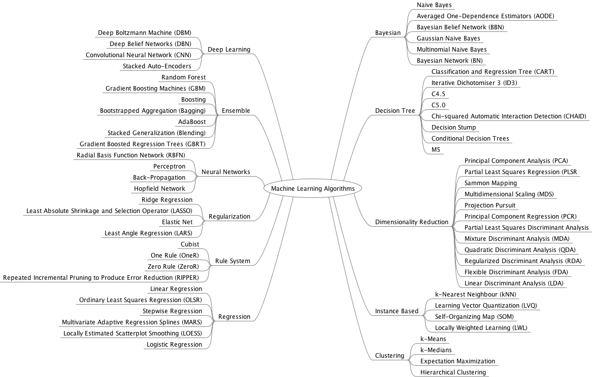

class: center, middle # Introduce Machine Learning <h3 style="color: gray">Presented by Tae Geun Kim</h3> --- # Table of Contents 1. Types of Machine Learning 2. Scoring Machine Learning Algorithm 3. Data as Probability 4. Basic Statistics 5. Bias-Variance Tradeoff --- class: center, middle # Types of Machine Learning --- ## Types of Machine Learning -- * Supervised Learning -- * Unsupervised Learning -- * Reinforcement Learning -- * Evolutionary Learning --- <p style="text-align:center"></p> --- We will divide ML by two ways * Statistical Learning (Based on Statistics) * Deep Learning (Based on Induction) -- For Statistical Learning, -- * Statistics -- * R (or Scipy or Julia) -- * DIY (Do It Yourself with your own languages) -- For Deep Learning, -- * Tensorflow -- * Torch / PyTorch -- * MXNet or Other frameworks --- class: center, middle # Scoring Machine Learning Algorithm --- ## 1. Overfitting <img src="overfitting.png" width="100%"> We need third data sets - **validation set**. This procedure called **Cross Validation**. --- But in some cases, we can't get enough labeled data. So, we need **semi-supervised learning**. There are some ways : -- * Leave Some Out (Leave one out) -- * Multifold cross validation --- ### Example : Multifold cross validation <img src="Kfold.jpg" width="100%"> --- ## 2. Confusion Matrix <table id="tab01" align="center"> <tr> <th>Actual \ Predicted</th> <th>Cat</th> <th>Dog</th> <th>Rabbit</th> </tr> <tr> <td>Cat</td> <td>5</td> <td>3</td> <td>0</td> </tr> <tr> <td>Dog</td> <td>2</td> <td>3</td> <td>1</td> </tr> <tr> <td>Rabbit</td> <td>0</td> <td>2</td> <td>11</td> </tr> </table> --- <img src="confusion.png" alt="confusion" width="100%"> --- ### Example <table id="tab01" align="center"> <tr> <th>Actual \ Predicted</th> <th>Cat</th> <th>Dog</th> <th>Rabbit</th> </tr> <tr> <td>Cat</td> <td>5</td> <td>3</td> <td>0</td> </tr> <tr> <td>Dog</td> <td>2</td> <td>3</td> <td>1</td> </tr> <tr> <td>Rabbit</td> <td>0</td> <td>2</td> <td>11</td> </tr> </table> <br> <table id="tab01" align="center"> <tr> <th>Actual / Predicted</th> <th>Cat</th> <th>Non-cat</th> </tr> <tr> <td>Cat</td> <td>5 TP</td> <td>3 FN</td> </tr> <tr> <td>Non-cat</td> <td>2 FP</td> <td>17 TN</td> </tr> </table> --- ### Confusion Index * Notations $$ P = TP + FN, ~ N = FP + TN $$ -- <br/> * Accuracy $$ ACC = \frac{TP+TN}{P + N} $$ -- <br/> * Sensitivity, Recall, True positive rate $$ TPR = \frac{TP}{P} $$ --- ### Confusion Index -- * Specificity, True negative rate $$ TNR = \frac{TN}{N} $$ -- * Precision, Positive predictive value $$ PPV = \frac{TP}{TP + FP} $$ --- * High Recall `\(\rightarrow\)` the class is correctly recognized (small FN) -- * High Precision `\(\rightarrow\)` an example labeled as positive is indeed positive (small FP) -- * High Recall, Low Precision `\(\rightarrow\)` Miss a lot of positive examples, but those we predict as positive are indeed positive (low FP) -- We need quantity to measure both (Recall and Precision) -- * F-measure $$ F = \frac{1}{\alpha\frac{1}{PPV} + (1-\alpha)\frac{1}{TPR}} = \frac{(\beta^2 + 1)PPV \times TPR}{\beta^2 PPV + TPR}$$ -- * `\(F_1\)`-measure (`\(\beta = 1\)`) $$F_1 = 2 \times \frac{TPR \times PPV}{TPR + PPV}$$ -- * `\(F_1 \, \rightarrow \, 1\)` : Best! * `\(F_1 \, \rightarrow \, 0\)` : Worst! --- ## 3. Receiver Operator Characteristic Curve (ROC) <p style="text-align:center"><img src="roc.gif" alt="roc" width="75%"></p> --- * Left, Top is better (TPR High, TNR High) -- * Near `\((0,1)\)` is called perfect classifier -- * Near `\((1,0)\)` is called anti classifier -- We need more precise way to determine better classifier -- ### AUC (Area Under the Curve) <p style="text-align:center"><img src="auc.jpg" alt="auc" width="50%"></p> --- ## 4. Unbalanced Data Set * To measure accuracy, we assume same P & N in example -- <font style="color:red">It's not true!</font> -- * Matthew's Correlation Coefficient <br/> $$ MCC = \frac{TP \times TN - FP \times FN}{\sqrt{(TP + FP)(TP + FN)(TN + FP)(TN + FN)}}$$ (If any parenthesis in denominator become zero, then set denominator is 1.) -- * MCC `\(\rightarrow\)` 1 : Perfect Prediction * MCC `\(\rightarrow\)` 0 : No better then random Prediction * MCC `\(\rightarrow\)` -1 : total disagreement between prediction and observation --- ## 5. Precision & Trueness <p style="text-align:center"><img src="trueness.png" alt="trueness" width="70%"></p> --- class: center, middle # Data as Probability --- * Conditional Probability $$ P(C_i | X_j) $$ -- * Joint Probability $$ P(C_i, X_j) $$ -- * Bayes' rule $$ P(C_i | X_j) = \frac{P(X_j|C_i)P(C_i)}{P(X_j)}$$ -- * `\(P(C_i | X_j)\)` : Posterior Probability -- * `\(P(C_i)\)` : Prior Probability -- * `\(P(X_j | C_i)\)` : Class Conditional Probability -- * Total Probability $$ P(X_j) = \sum_i P(X_j|C_i)P(C_i) $$ --- ### How to define class? * How to determine class for overlap area? --- ### Maximum A Priori (MAP) * Choose class which has large prior probability $$ P(C_i | x) > P(C_j | x) \hspace{0.5cm} \forall i \neq j $$ -- <br/> <i> Let `\(P(C_1|x) = 0.35, P(C_2 |x) = 0.45, P(C_3 |x) = 0.2\)`. As an example, suppose that the inputs are the results of a blood test, the three classes are different possible diseases, and the output is whether or not to treat with a particular antibiotic. The MAP method has told us that the output is `\(C_2\)` , and so we will not treat the disease. But what is the probability that it does not belong to class `\(C_2\)`, and so should have been treated with the antibiotic? It is `\(1 − P (C_2 | x) = 0.55\)`. So the MAP prediction seems to be wrong</i> -- <br> * We need another solution - **Bayes' Optimal Classification** --- ### Bayes' Optimal Classification -- * Minimizing risk is better than just maximizing posterior probability, -- * We need to quantify misclassification - **Loss Matrix** -- * Loss matrix : Risk of misclassification of `\(C_i \rightarrow C_j \)` -- * Discuss later --- ## Naive Bayes classifier -- * If `\(X_j\)` is n-dimensional vector, then $$P(X_j | C_i) = P(X_j^1, X_j^2, \cdots , X_j^n | C_i)$$ -- * Since high dimension demands more data, we assume conditionally independence $$P(X_j^1 = a_1, X_j^2 = a_2, \cdots X_j^n = a_n | C_i) = \prod_k P(X_j^k = a_k | C_i)$$ -- * Naive bayes classification is : $$\underset{C_i}{\text{argmax}}\left[ P(C_i)\prod_k P(X_j^k = a_k | C_i) \right]$$ --- <p style="text-align:center"></p> * Q : If near deadline, no party and lazy then what's your activity? --- class: center, middle # Basic Statistics --- * Mean $$ E[\mathbf{x}] = \int x \mu(dx) = \int xf(x) dx = \sum_i x_i p_i $$ -- * Variance $$ V(\mathbf{x}) = E((\mathbf{x} - \mathbf{\mu})^2) $$ -- * Standard Deviation $$ \sigma(\mathbf{x}) = \sqrt{(V(\mathbf{x}))}$$ -- * Covariance $$ \text{Cov}(\mathbf{x}, \mathbf{y}) = E((\mathbf{x} - \mathbf{\mu})(\mathbf{y} - \mathbf{\nu})) $$ --- * Covariance Matrix -- $$\Sigma = \begin{pmatrix} E[(x_1 - \mu_1)(x_1 - \mu_1)] & E[(x_1 - \mu_1)(x_2 - \mu_2)] & \cdots \\\ E[(x_2 - \mu_2)(x_1 - \mu_1)] & E[(x_2 - \mu_2)(x_2 - \mu_2)] & \cdots \\\ \cdots & \cdots & \cdots \end{pmatrix}$$ -- * Matrix Form $$\Sigma = E[(X - E[X])(X - E[X])^T] $$ --- ## Mahalanobis Distance --- ## Mahalanobis Distance * Formula -- $$ D_M (\mathbf{x}) = \sqrt{\bf (x - \mu)^T \Sigma^{-1} (x - \mu)}$$ -- <p style="text-align:center"></p> --- ## Gaussian Distribution -- * By **Central Limit Theorem**, every distribution converge to gaussian distribution. -- * Formula $$ p(x) = \frac{1}{\sqrt{2\pi\sigma^2}}\exp\left( \frac{-(x-\mu)^2}{2\sigma^2} \right) $$ -- <p style="text-align:center"></p> --- ## Gaussian Distribution * For High dimension -- $$p(\mathbf{x}) = \frac{1}{(2\pi)^{d/2}|\mathbf{\Sigma}|^{1/2}} \exp \left( -\frac{1}{2} (\mathbf{x} - \mu)^T\mathbf{\Sigma}^{-1}(\mathbf{x} - \mu) \right) $$ --- class: center, middle # Bias-Variance Tradeoff --- ## Bias-Variance Tradeoff --- ## Bias-Variance Tradeoff <p style="text-align: center"></p>